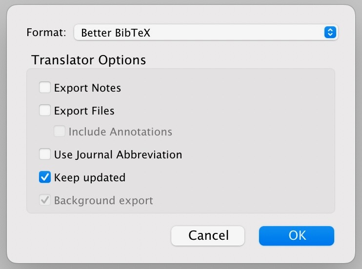

Using Quarto’s Reference Manager with Zotero
This writeup builds on the more basic approach described in the previous writeup: Using Quarto’s Reference Manager with Google Scholar
Intro: Why Should I Use Zotero When It’s More Complicated Than Google Scholar?
Here, I basically want to convince you to adopt Zotero, with an absolutely crucial extension called Better BibTeX, as your go-to reference manager for the rest of the semester/rest of your academic career, since I can 110% say that it made my life 1000 times easier as I used it more and more throughout the PhD (and, I wish I had started using it sooner!). Not as some sort of awkward self-aggrandizement, but just to show you the power of Zotero, my dissertation ended up having 707 references, and I got literally 5 or 6 emails from Columbia asking me to change the formatting of the references before they would accept it, meaning that without Zotero I would have had to manually update my references
\[ \underbrace{(707 \times 6)}_{\text{Updating in-text}\atop\text{citations}} + \underbrace{(707 \times 6)}_{\text{Updating references}\atop\text{section}} = 8,484\text{ times} \]
whereas with Zotero it just meant updating a single global setting 6 times.
However, you’ll notice that this is basically the selling point I already gave for Quarto’s references manager (which integrates with Zotero) in the previous writeup. The real selling point of Zotero over manually downloading BibTeX entries using Google Scholar comes from:
- The Zotero Connector, which is a browser extension that lets you click a single button to instantly add any article you’re reading to your Zotero library, and
- The Better BibTex Extension for Zotero, which truly transforms you into a citation master by automatically syncing your Zotero library with different
.bibfiles across your hard drive.
Long story short, let’s first think about the pipeline of steps you need to perform when using Google Scholar, if you are browsing the web and happen to find an interesting article/book somewhere that you’d like to integrate into your Quarto website:
- Remember the name of the article
- Open up Google Scholar
- Search the article on Google Scholar
- Find the search result corresponding to the article you are interested in citing (if the article has some generic title like “Postmodernism” or something, it may be many many pages down in the list)
- Click the “Cite” link
- Click the “BibTeX” link
- Copy the BibTeX entry
- Manually look through your hard drive for any
.bibfiles that you’d like to update to contain this entry, open them, and paste the entry at the end of the file.
With Zotero plus these two addons installed, these steps literally become:
- Click the Zotero Connector button
Automatically, immediately after you click this button, Zotero
- Adds an entry to your library for this article/book
- Scrapes metadata from the page to autofill the various fields: title, authors, date, etc.
- Assigns a citation key to the article/book, based on a template you give it1.
- Automatically goes out to every
.bibfile on your computer that you asked it to keep in sync with your library, and adds this entry to the end.
Downloading Zotero, Zotero Connector, and Better BibTeX Extension
So, if you’re sold on Zotero, you can download the main Zotero program here (there are both Windows and Mac versions).
Once you’ve download and installed it, like I mentioned, there is a crucial second piece of the puzzle: kind of like how we had to install both Quarto and the Quarto VSCode Extension to fully Quartify our lives, to fully Zoterify our lives we need both the main Zotero app as well as the Zotero Connector. This is literally a magic button that takes whatever article/book you’re reading, figures out its title/author/year/etc., and adds it to your library.
The third and final piece of the puzzle is the Better BibTeX Extension for Zotero. This is the piece that lets you:
- Specify templates for how you would like Zotero to create the citation keys for any article you add via the magic button (see previous footnote), and
- Automatically update
.bibfiles across your hard drive, to stay in sync with your Zotero library.
Adding Quarto Back Into the Mix
If you’ve downloaded Zotero, Zotero Connector, and Better BibTeX, there are really only four remaining steps:
- Create a collection within Zotero, which you’ll use to keep track of all the references that you want to include in a given Quarto project. For example, I have a Zotero collection called “DSAN5000”, where I add (using the magic button) any DSAN5000-related articles. Then,
- Right-click on this collection, select “Export Collection…”, and instead of the standard choices built into Zotero, choose the “Better BibTeX” format. Make sure you check the “Keep Updated” checkbox, and then click “OK”:

- Choose where you’d like it to export the
.bibfile to (for example, in the same directory as some Quarto file you’re working on, likemy_article.qmd), and click “Save”. - Go into your Quarto document, like
my_article.qmd, and add the following line to the YAML metadata block at the top of the file:
bibliography: references.bib(if you chose a different name from references.bib when exporting from within Zotero just now, use that name instead)
That’s it, you’re done! Better BibTeX keeps track of all the .bib files that you’ve chosen as export locations for this collection, and every time you use the Magic Button to save a book/article to this collection, all of these .bib files will automagically update to contain the new book/article, so that you can immediately cite it in my_article.qmd.
Footnotes
For example, my template is something like
lower(author(1).last)_year_lower(title(1)), which tells Zotero to automatically set the key to be the last name of the first author, then the year, and then the first word of the title, all lowercased.↩︎